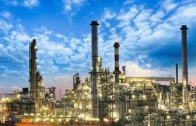

industria
A indústria refere-se ao setor econômico responsável pela transformação de matérias-primas em produtos acabados ou semiacabados. É um conjunto de atividades que envolvem a produção em larga escala, utilizando máquinas e equipamentos para criar bens que serão utilizados por consumidores ou por outras indústrias As indústrias são locais de transformação de qualquer matéria-prima em objetos prontos para o consumo. Elas se instalam em lugares que oferecem mão de obra, matéria-prima, energia, transportes e mercado consumidor, para que haja a comercialização do que é produzido por elas. É possível classificá-las em três grandes grupos, dividindo-as de acordo com a sua produção. São eles: indústrias de base, indústrias de bens intermediários e indústrias de bens de consumo. Existem várias indústrias importantes no Brasil, como a Petrobras, Vale, Ambev; e no mundo, como a Apple, Samsung, Volkswagen, BMW, Coca-Cola, entre outras. Veja também: Revolução Industrial: entenda como surgiu a indústria Tipos de indústria A atividade industrial consiste no processo de transformação da matéria-prima, proveniente da natureza, em qualquer bem de consumo, durável ou não durável. Os tipos de indústrias são classificações que levam em conta o tipo de produção industrial, ou seja, o que aquela indústria produz. Há três tipos gerais de indústrias: indústrias de base, indústrias de bens intermediários e indústrias de bens de consumo.
 As indústrias de base, também chamadas de indústrias de bens de produção, são aquelas que fazem a transformação da matéria-prima bruta, encontrada diretamente no meio natural, em matéria-prima processada, que será usada em outros ramos industriais. Dessa forma, esse tipo de indústria produz equipamentos e matéria-prima que serão usados por outras indústrias. Já as indústrias de bens intermediários são aquelas que produzem bens manufaturados ou matéria-prima processada para outros ramos industriais, ou seja, para a produção de outros bens. São insumos que serão usados para outras indústrias produzirem. As indústrias de bens de consumo produzem e direcionam essa produção diretamente ao mercado consumidor. Elas se dividem em indústrias de bens duráveis e não duráveis. Os bens duráveis são aquelas mercadorias que podem ser usadas por bastante tempo, como eletrônicos, roupas e calçados etc. Os não duráveis são os produtos perecíveis, ou seja, que seu prazo de validade é curto, como alimentos, remédios etc.